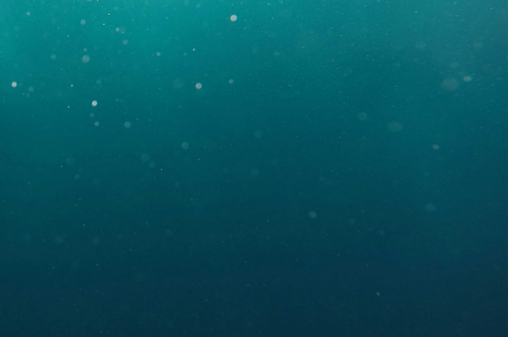

our purpose
When Rubicon was founded in 2008, we had a clear mission in mind. We wanted to solve a growing global problem that had been left unaddressed for decades, if not centuries. That problem was the accumulation of waste and its increasingly damaging impact on the world.
National giving
With a rapidly growing footprint, we are able to bring valuable insights, experience, and support to charitable organizations at the national level.
Local giving
We actively invest in our local communities through efforts like employee volunteering and mentoring programs.
Sustainable giving
All of our charitable work, local and national, is rooted in our conviction that a world without waste is possible, and our team is dedicated to activities that get us closer to that goal.
Interested in a partnership?
Let’s start a conversation.
or email us at contact@rubicon.org